Для дела
Изображения и оформление
Для социальных сетей, товаров и проектов
Сайты
Страницы, на которых можно представить себя, свои услуги или проект
Каталоги, презентации и прайсы
Портфолио, презентации, гайды, каталоги и прайсы
Ольга Судзиловская
Для дела и для себя

Что можно заказать
Каждую услугу можно заказать отдельно
Для социальных сетей, товаров и проектов
Страницы, на которых можно представить себя, свои услуги или проект
Портфолио, презентации, гайды, каталоги и прайсы
Образы на основе ваших фотографий: для сайта и профессионального профиля, социальных сетей или просто для себя
Бережное восстановление повреждённых и выцветших снимков с сохранением внешности людей
Мои работы
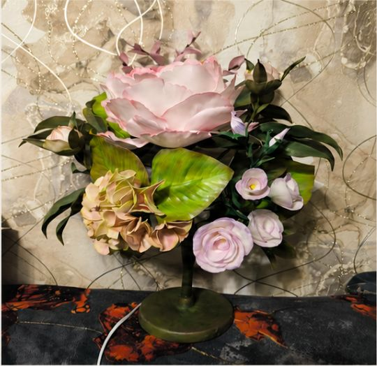
Исходник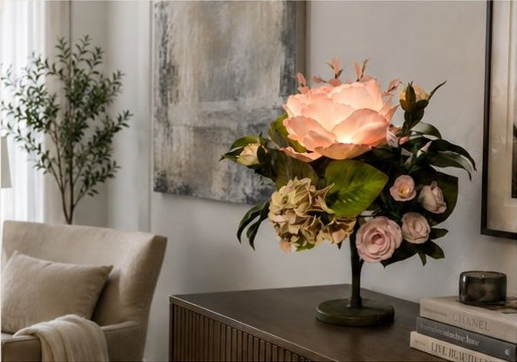
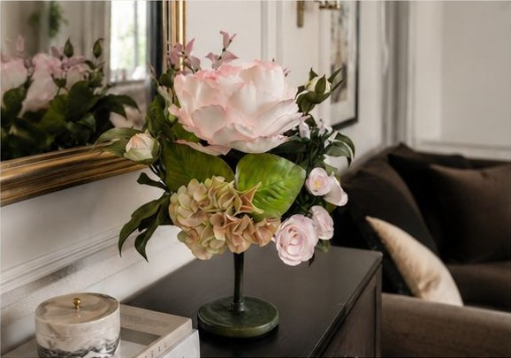
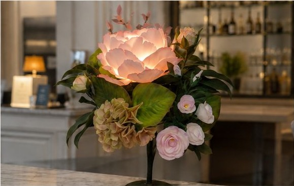
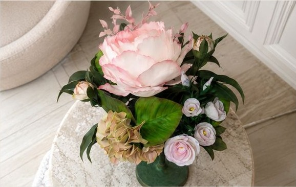
Задача: по фотографии готового светильника показать, как он может выглядеть в интерьере.
Результат: создана серия атмосферных визуалов для социальных сетей и карточек товара.
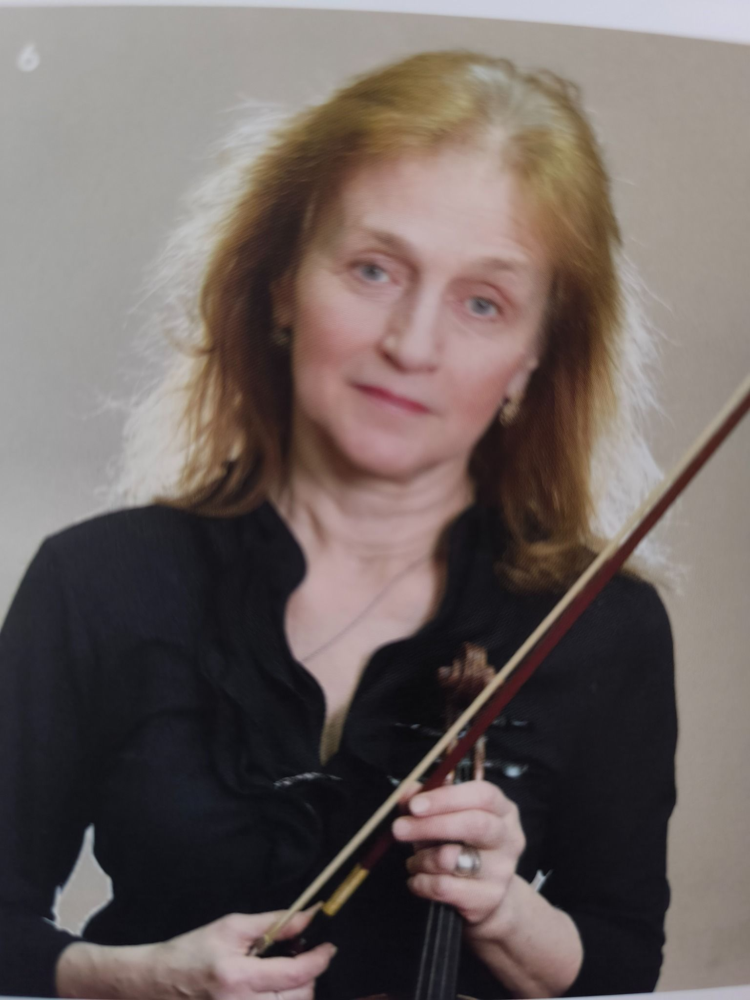
До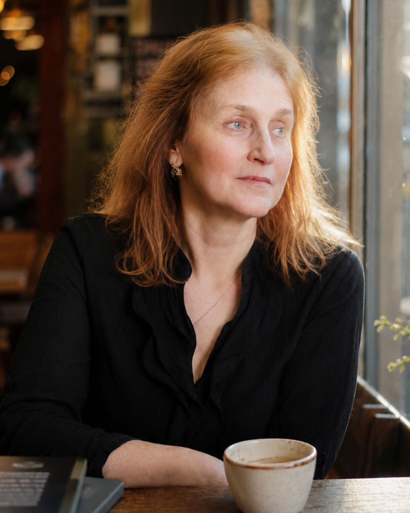
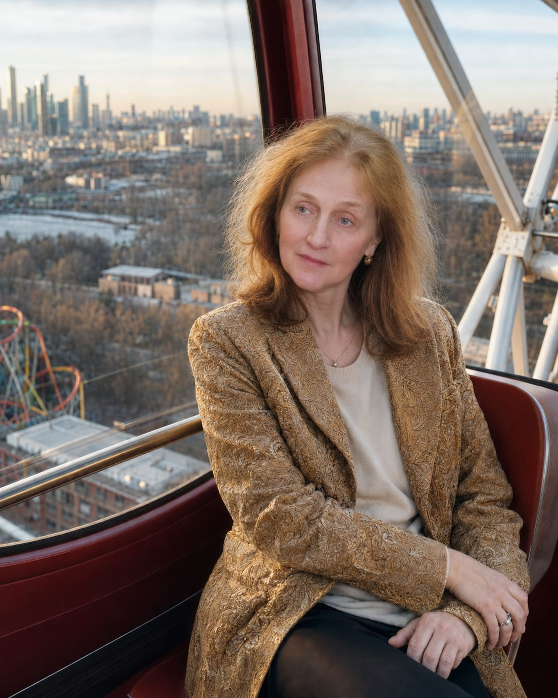
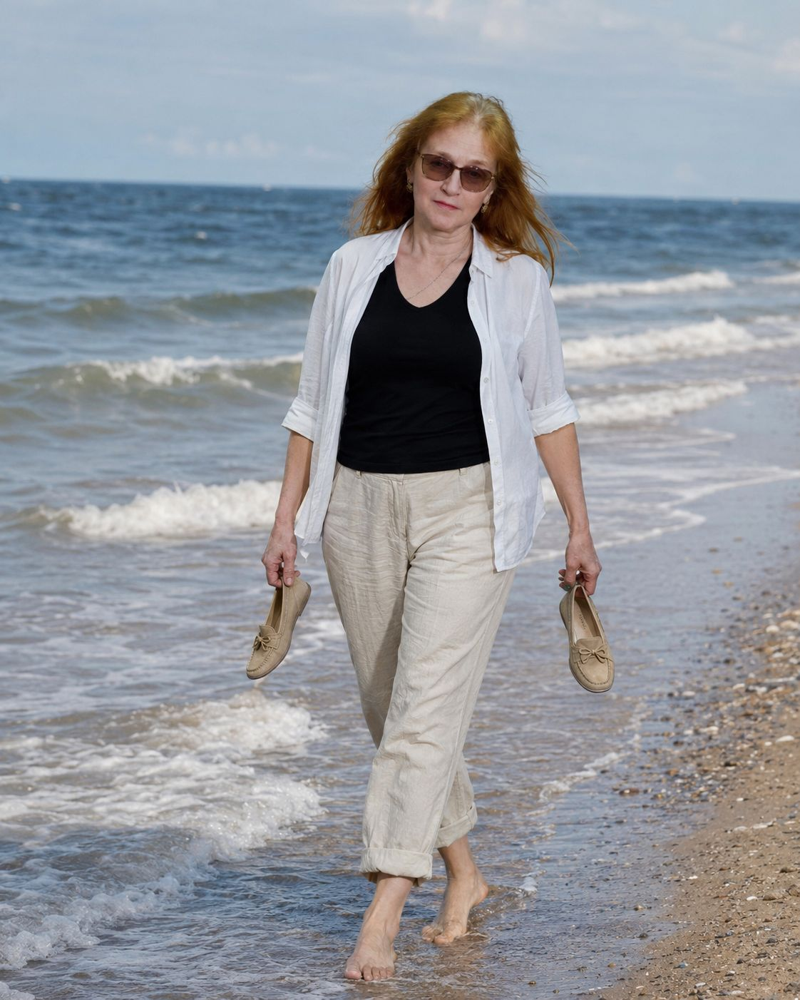
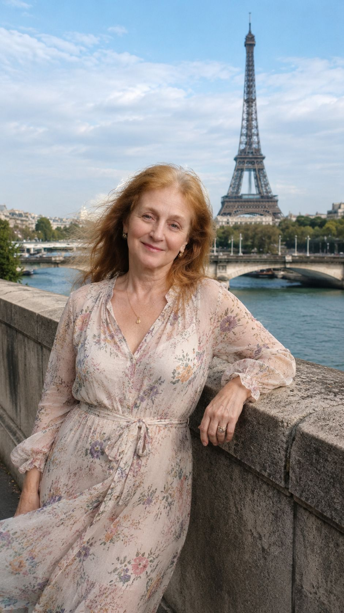
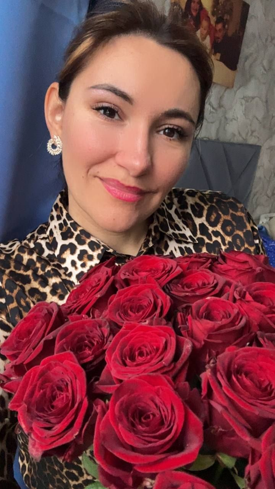
До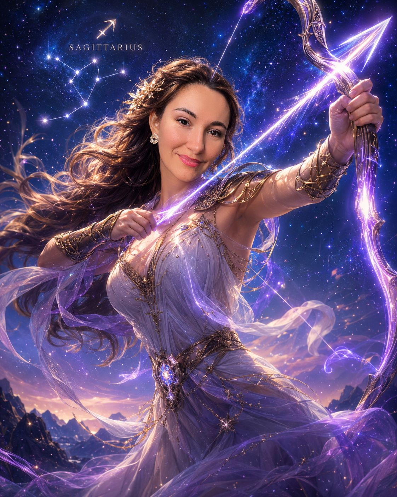
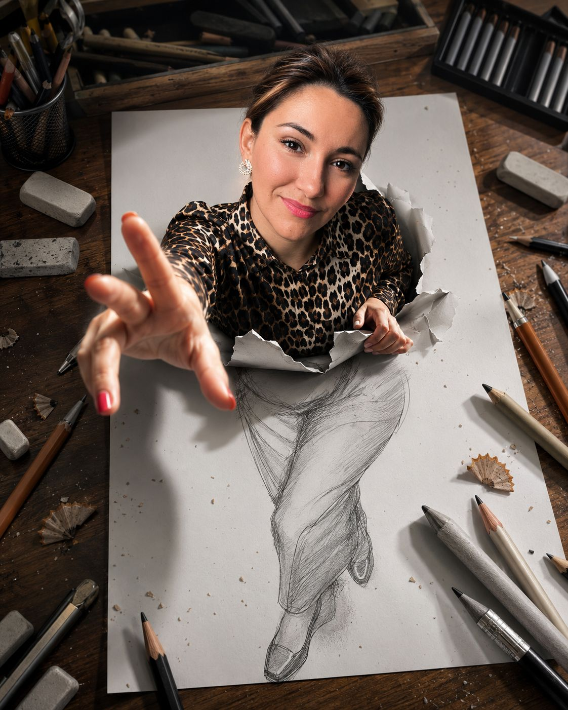
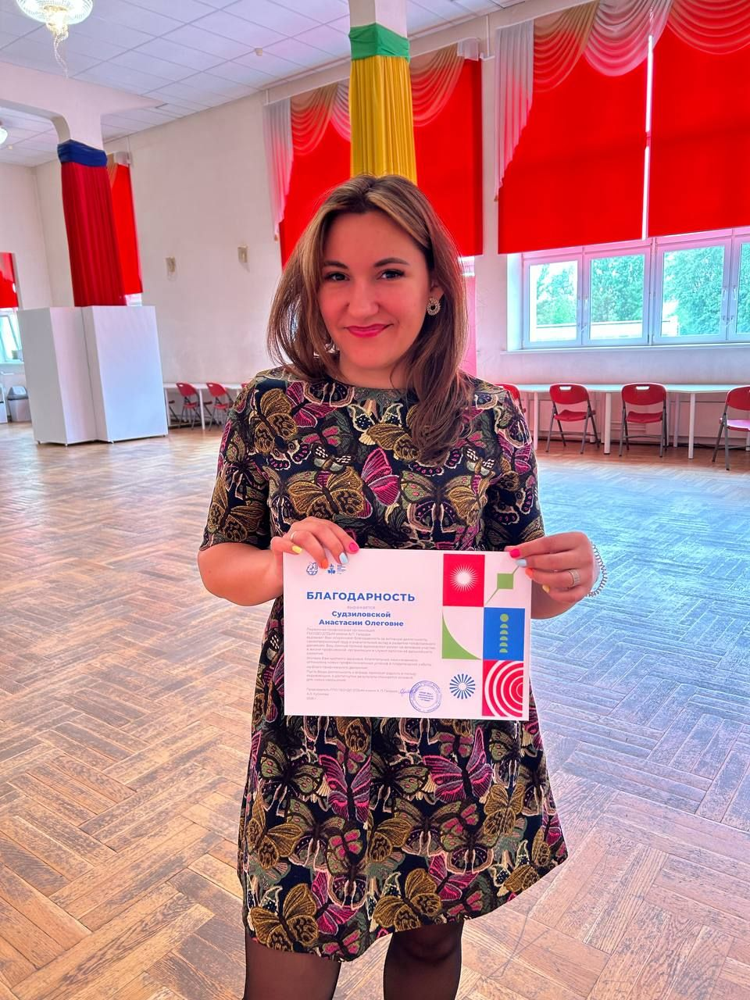
До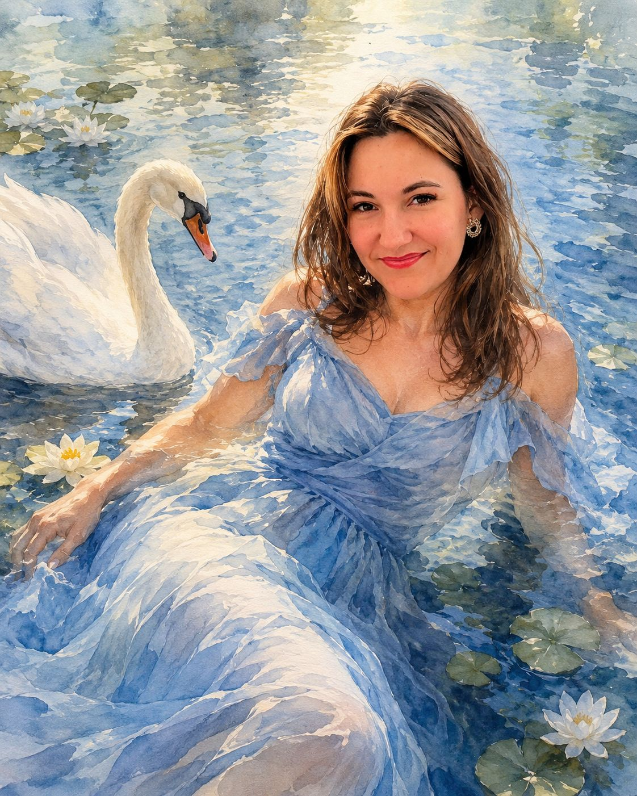
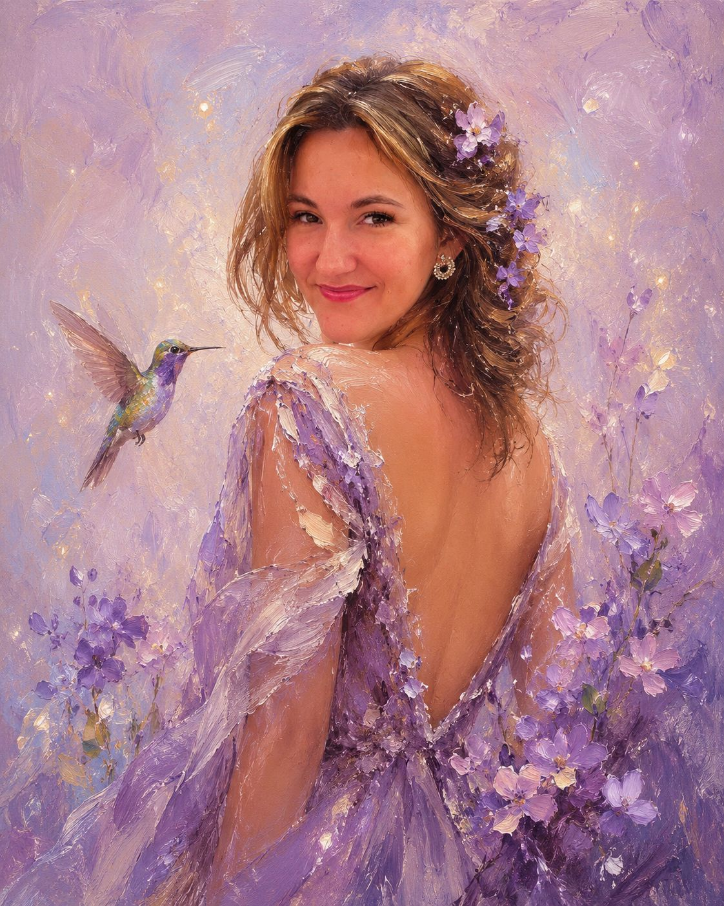
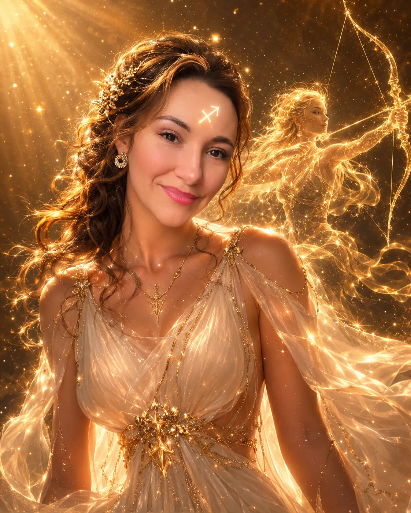
ПослеДля себя, социальных сетей или профессионального профиля — можно увидеть себя в разных образах и обстановке, сохранив узнаваемую внешность.
 До
До После
ПослеУбраны царапины, заломы и следы времени, восстановлена чёткость снимка с сохранением внешности человека.


Интерактивная памятка из шести страниц, которая помогает выбрать подходящий подарок
Посмотреть PDF →Как всё происходит
Порядок зависит от услуги, но основные шаги остаются одинаковыми
Вы рассказываете, что хотите получить и для чего это нужно.
Определяем, какие фотографии, тексты или другие материалы понадобятся.
Делаю то, о чём договорились: изображения, нейрофотосессию, восстановление фотографии, сайт или PDF.
Вы смотрите готовую работу перед окончательной передачей.
Вы получаете готовые файлы, которыми можно пользоваться.
Обо мне
Ольга Судзиловская · визуальный дизайнер с ИИ
Я — Ольга Судзиловская, заслуженная артистка России и музыкант. После многолетней работы в музыке я создала собственный проект ручной работы «ОлаДизайн». Желание развивать его привело меня к обучению по продвижению во ВКонтакте, а затем — к нейросетям и созданию визуального контента. Постепенно это направление вышло за рамки моего проекта — так появилась «НейроОля».
В работе мне помогают внимание к деталям, терпение, чувство композиции и гибкость в общении. Я стараюсь услышать человека, помочь ему уточнить идею и внимательно довести результат до нужного образа.
Частые вопросы
Коротко о материалах, формате работы и первом обращении
Связаться
Кратко опишите задачу. Если есть фотографии, тексты или другие материалы, их можно приложить сразу.